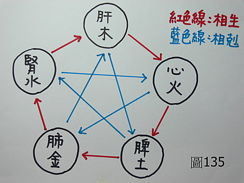

基礎概論 61：中醫的五行生剋，到底是在講什麼？中醫的五行生剋並非術數的五行生剋，兩者不宜混淆成一談。
作者：陳建元
先讓我們來看一段老中醫對中醫五行生剋運用上的感觸：
干祖望談什麼是中醫的〝特色〞－－
有人說，中醫理論的主軸是陰陽五行。但現在還有哪一位中醫用它作為理論依據來治病。年輕中醫毫不猶豫地回答：我們不用。老中醫們記憶猶新，在建國之初章次公先生發表了對五行懷疑的話，一夜之間不少中醫即群起而攻之，使章老「一時性」的聲名狼藉，有誰來甘作第二個章次公。矛盾得很，還有少數中醫在使用，而且也真能獲得良好的收穫，但他們也不肯坦率承認是中醫之寶，緣於玄妙迷信的包裝就已使人鄙棄。筆者還是取用的，但並非經常地取用，因為的的確確對一般常見病、普通病一無用處。唯對疑難雜症在黔驢技窮之際，搬出這套冷門手法來應付，如伐離（火）濟坎（水）、培土生金、抑木扶土、壯水製木、實則瀉其子、虛則補其母……等等等等，自有其意想不到的神奇微妙。
上文引用於：http://tw.myblog.yahoo.com/jw!jPTkrHyUHwUAI0SEXpIrvl8o/article?mid=955

中醫五行生剋的存廢，在大陸曾經引起兩次大規模的辯爭，後來也是不了了之，主廢的人，是因為認為這種說法，僅僅是術數上的推演，跟醫學有何關係？一般而言，中醫裡，陰陽的說法能被接受，因為陰陽泛指宇宙中的二分法，一種相對的概念，五行的說法也還能被接受，因為只是把眼前的事物，依照類比取像，並把在觀察上，發現彼此有關聯性的器官歸在同類，概分為五類、六類、或幾大類，然後賦予一個名稱而已，這些都還能接受（意思就是說，金木水火土，只是五臟的代名詞而已，只要不論及「生剋」等交互關係，其實就是當初古人把「肺」歸在「土」，把「心」歸在「水」等等和現行通俗不同的歸類法，只是後面延伸的名稱一律跟著改過來而已，並不會影響到實質的架構和用藥，請參考基礎概論 第 60 條文）。五行中無法被接受的東西，是接下來的「五行生剋」，主廢的人，是因為覺得其間的生剋沒道理，土為什麼一定要去生金（如上面〈圖135〉的培土生金），木為什麼要去剋土（如上面〈圖135〉的抑木扶土）， 是很多的土才會去生金，還是一點點的木就能剋土，土一定要去生金嗎，能不能去生別的東西，木剋土的實質管道是什麼？還是沒有理由，木就是註定要剋土？凡此種種，都充滿了問號？主存的人則如上述黃底文章老中醫，雖然無法講清其中的理由，但臨床有時會有異想不到的效果，所以主存。
其實，中醫的五行不等於術數中的五行，把兩者混為一談的錯誤認知，不但出現在國外學者，譬如日本古方派的吉益東洞（西元1702～1773）、後藤艮山等、就把《黃帝內經》、《難經》等，誤以為是脫離現實，純粹以陰陽五行相生相尅，來討論疾病的「臆測之見」，並誣指它們為「陰陽醫」，認為它們不是治病的學問，而是一種術數猜測。這種情況也出現在中國歷代不少醫家之中，到現代的「中醫博士」，還是不少人，把中醫的五行生剋，誤以為就是術數家的那種五行生剋，迷茫而不解，霧裡看花，愈看愈花，自己的誤解在先，先是指鹿為馬，繼而指責馬為什麼會長角？看到獨孤九劍，卻以為是健身操，只能怪自己迷糊了。
中醫的五行相乘，其實是診法中的一部分，是用來和脈、證相配套，作為「指出病機所在」的工具。中醫的診法內容，就是脈、證（色。包含望、聞、問）兩樣東西，也就是「內脈外證」互相對照，而脈診在《內經》佔了很大篇幅，在《難經》則接近1/3篇幅，很明顯的，脈診是診法的中心，五行相乘是配套這些東西來說明病機的，明辨病機是為了下藥精準，如此療效才會高。張仲景說了：「觀其脈證，知犯何逆，隨證治之」這句名言，要知犯何逆，隨證治之的前題是觀其脈證，脈證是中醫的診斷。
注意下面這些經文：
1. 黃帝問曰：「人病胃脘癰者，診當如何？」岐伯對曰：「診此者當候胃脈，其脈當沉細。」〈黃帝內經・素問病能論〉
〈闡譯：黃帝問岐伯說，當人患胃脘癰（這邊應該是指慢性胃炎或胃潰瘍）的時候，如何把脈得知？歧伯說：當要把他的胃脈，如果這個人的胃脈是沉細無力的，我們就可以知道這個人有胃痛的毛病。沉細無力，是陽氣不足，陽氣不足，胃腸的運動就比正常人緩慢，胃液分泌一般也不足，兩者加起來，日久必帶胃病而隱隱作脹作痛。〉→→→這指出早在內經時代，古人已經用脈斷病了。
2. 腎肝並沉為石水，並浮為風水，並虛為死。〈黃帝內經・素問大奇論〉
〈闡譯：當遇到有人水腫的時後，雖然外表看起來都是一樣的水腫，但我們必須進一步由他的脈像上來判定病機，才能下藥，不能只看外症就套方下藥，如果他的肝脈腎脈都是沉下去而鼓指無力帶黏脈的，這個叫做作石水，也就是現代因腎臟機能故障，慢性腎衰竭所造成的水腫，我們治療的時候，主病機必須從肝腎的兩個部位來著手；如果是他的肝脈腎脈都是浮起來的，甚至6脈都是浮緊有力的，這個叫做作風水，也就是現代常見的因為感冒，所引發的急性腎炎，這種的病機是在肺，也就是我我們要從他肺系的外感來治療，治療外感兼利水，治療得當，很快就能恢復；如果是肝脈腎脈都是虛弱嚴重的，這就難治了，因為治療水腫的時候，多少都要用到利水的攻伐藥，生病的腎脈已經很虛弱了，肝脈又無力，表示肝的疏洩力也不足，而肝脈腎脈虛弱太甚者，又經不起攻伐，用藥有難度，所以說難治。）→→→這段令人驚訝，不但是雙病機（肝、腎），而且用浮、沉、虛來判斷不同的病機來源。
3. 胃脈沉鼓澀，胃外鼓大，心脈小堅急，皆鬲偏枯。〈黃帝內經・素問大奇論〉
〈闡譯：把脈的時候，如果這個人的胃脈是沉鼓澀，沉是虛，鼓澀是無力，表示胃的氣血鼓動不暢，而且有凝滯的現象，氣血一凝滯，濕痰就來了；或是胃脈向外鼓動很大，火旺爍陰，這就會結成熱痰在胃，也就是現代說的膽固醇偏高，這個時候，如果我們又同時發現他的心脈小堅急，堅急是弦硬的意思，加上小脈，就變成細弦或細澀脈了，心主血脈的運行，今細弦或細澀脈，表示血液循環甚差。這種人膽固醇偏高，血液循環又差，日後容易中風。〉→→→這段更令人驚訝，竟然左右手各抓一部脈，兩邊兜起來合判日後中風的可能性。這一段，大部分學脈的人，看了會跌破眼鏡，為什麼？相信絕大部分學過28脈幾年的人，也只是在單部脈上打滾而已，而《內經》中已經用雙部脈來聯合研判病機，其進化的程度，令人咋舌。
上面這些經文，主要是指出脈法在《內經》、《難經》年代的前後，已經發展到一個令人驚訝的程度，並非如一般人的認知，還在小學程度。培土生金、抑木扶土、壯水製木、實則瀉其子這些東西是在講什麼？這些東西是結合上面那些經文在使用的，內容是在講「病機」，都是脈診的內容：
培土生金（即土生金）→→→ 譬如病人有咳嗽的現象，在一般情況下，脈症會相應，所以他的肺脈會有異樣，顯示他的咳嗽是肺源的，這個時候，我們就是從他的肺系來治療，就能收到效果。但如果觀其脈症之後，發現一樣同是上面的咳嗽，但他的肺脈並無異樣，而是他的脾脈有異樣，這個時候，我們就知道這個「犯何逆」的源頭，是脾源的，意思就是說，這個咳嗽的病機，不是肺源來的，而是脾源來的，所以我們當從脾治，而不是從肺治，這樣才能收到效果。而如果這個時候，他脾脈的異樣，是脾脈過度虛弱，這種咳嗽，也叫作「脾虛咳嗽」，補了脾，使脾供給肺的養分足夠了，咳嗽自然痊癒，所以我們叫它培土生金（可以理解成脾虛的人，吸收消化力薄弱，導致某些特定營養分的消化吸收不全，而這些特定營養分，恰巧是肺、氣管正常運作的必要條件）。
要知這種土生金，其實是在講病機的來源不同，而之所以用了有效，是因為開藥有針對病機，並不是術數中土生金的神秘力量，中醫裡的五行相乘，和術數中的五行生剋，完全是兩碼子事，不能混為一談。
而其他的抑木扶土（木剋土）、壯水製木（水生木）、實則瀉其子（金生水‥‥‥）‥‥‥，講的也都是一樣的東西，都是在描述不同來源的病機，這是因為在千年的觀察之中，發現有這些事實而被記錄下來，這些東西的作用，只是在提示在看病的過程中，有時會有這些病機的存在，你不能完全去忽略掉。
又譬如同是一個「胃痛病」，如果是脾脈有異樣，同時外症兼見便軟，腹脹腹瀉，就知道從脾胃論治即可（本臟自病）；如果是脾脈無恙，而是肝脈弦，同時外症兼見煩躁易怒、口苦，就知道要從肝膽論治，才能治癒胃痛（木剋土。即指肝源性的胃痛）（可以想像胃中自主神經的異常緊張亢奮，已經影響到腸胃的正常運作）；如果是脾脈無恙，而是心脈虛小，同時外症兼見唇白、面色不華、心悸，就知道要從心治，以火不生土，虛則補其母來論治，才能治癒胃痛（火生土。即指心源性的胃痛）（可以想像胃中血管的供血無力和不足，已經去影響到腸胃的正常運作）。所以說，這些東西是讓你拿來審病機、察病情、配合脈法找證據在使用的，它只是提醒你有這麼一種病機情況存在，再來的動作，就是你必須要從脈、證中去找，看看是否有這種證據，證明你的持論正確，然後才能確診而下藥，所以，在用法上，基本上是用來輔助脈法、外症，作診斷用途的，是實際和臨床結合在運用的，也就是說，五行生剋是脈證診法中的一個零組件，脈、症、五行生剋，互相結合之後，就跟臨床搭上線，變成了病機識別系統，但相反的，如果把五行生剋系統單獨獨立，則完全和臨床脫了節，單獨存在的「木剋土」、「火生土」，完全沒有切入臨床的著力點，變成只是一種空論。
歷代因為診法出現斷層，搞不懂這是什麼東西，常常張冠李戴的把它獨立出來，當成一種說玄的工具，把這種本是配套脈學、外症的診斷工具，拿出來當成術數玄理來闡釋，這樣並不正確。譬如說，胃痛就要從肝治，理由只是因為《內經》說：「木剋土」，所以見胃病就要疏肝，這種使用方式，是大有問題的，胃有病，如果脈象顯示病機在胃，是直接治胃才對，疏肝是錯誤的，如果脈象顯示病機在肝而導致胃痛，才是疏肝從肝治的時機。而當上述亂套不通的時候，則又搬出一套說：「虛則補其母」，所以這次改從補心火來治胃痛，則又是另外一次的亂套。更多大師，把中醫五行生剋和術數五行生剋混為一談，這是很糟糕的事，掛圖一掛，麥克風一抓：肺（金）不好的人，記得要補脾（土），因為中醫的理論說：「土可生金」，實證咳嗽嚴重的的人（肺金），可以瀉腎（水），理由是「實可瀉其子」，金生水，水為肺子，所以瀉腎以治肺咳，完全亂了套。肺不好的人，下藥直接治肺就可以了，不需要繞圈子治脾，除非是脈象和外症顯示，這個肺的問題，和脾源有牽涉關係，才有治脾的需要。
有的人說，雖然亂套不正確，但也常有效啊，這又如何解釋？
答：
這是因為五行只有五個，除掉生病的本臟，其他還有四個，所以亂套一通的方式，也有25％～30％的命中率，但這種意外矇中並不可喜，病人不在自己的掌控之內，是一種危險的失控狀態。
「木剋土」可以治療胃痛的原因，並不是在於術數的神秘五行力量，而是在於你的胃痛病機，恰巧是碰到一個肝源性的胃痛（譬如胃中自主神經異常亢奮，神經在中醫裡，大部分可歸屬在肝，這邊的肝是指中醫學中，臟象學中的肝，不是單純指西醫學中的肝），所以治肝可以療胃痛。「培土生金」可以治療肺病的原因，並不是在於術數的五行力量，而是在於你的肺病病機，恰巧是碰到一個脾源性的肺病，所以治脾可以療肺病。在針灸上，也是相同的道理，除了針灸本身的一些獨特性外，胃痛針肝經會好，並不是「木剋土」的神奇力量，而是在於你的胃痛病機，恰巧是碰到一個肝源的胃痛，所以針肝經會好。肺病針脾經會好，也不是「培土生金」的神奇力量，而是在於你的肺病病機，恰巧是碰到一個脾源的肺病，所以針脾經會好。
對於中醫的五行，不知道里面的這些內涵，而妄加排斥，是不對的。對這些內涵含糊不清，有時有效有時無效，知其然而不知其所以然，只能在疑難雜症在黔驢技窮之際，搬出這套冷門手法來應付，也不太好；最糟的情況是，因為不知道這是脈證的配套工具，就把中醫的五行獨立出來，又因為後代流行算命，所以又把中醫五行和術數五行混為一談，以為中醫看病是用算的，可像術數五行算生剋，這將造成極大的誤解與困擾。
【引用請先來信告知徵求同意，若有涉及販售營利等商業行為，版權所有拷貝盜用必究。】
【藥王脈學講壇】http://blog.xuite.net/drjychen/twblog